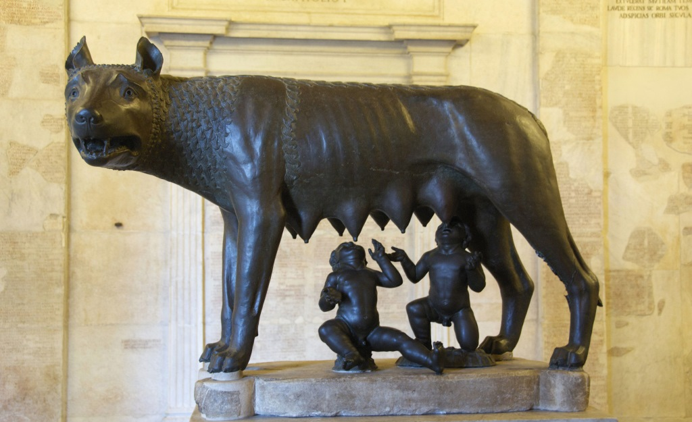

Traditional stories handed down by the ancient Romans themselves explain the earliest history of their city in terms of legend and myth. The most familiar of these myths, and perhaps the most famous of all Roman myths, is the story of Romulus and Remus, the twins who were suckled by a she-wolf. They decided to build a city, but after an argument, Romulus killed his brother and the city took his name. According to the Roman annalists, this happened on 21 April 753 BC. This legend had to be reconciled with a dual tradition, set earlier in time, that had the Trojan refugee Aeneas escape to Italy and found the line of Romans through his son Iulus, the namesake of the Julio-Claudian dynasty. This was accomplished by the Roman poet Virgil in the first century BC. In addition, Strabo mentions an older story, that the city was an Arcadian colony founded by Evander. Strabo also writes that Lucius Coelius Antipater believed that Rome was founded by Greeks.
Other pages